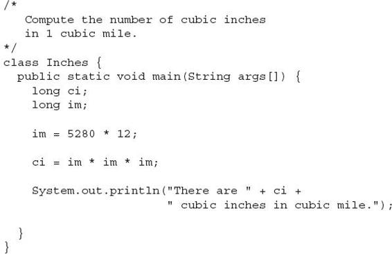
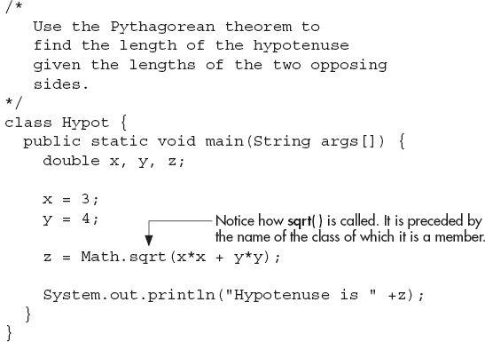
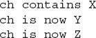
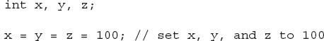
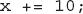
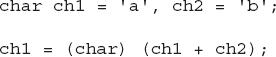

Chapter 2
Introducing Data Types and Operators
Key Skills & Concepts
Know Java’s primitive types
Use literals
Initialize variables
Know the scope rules of variables within a method
Use the arithmetic operators
Use the relational and logical operators
Understand the assignment operators
Use shorthand assignments
Understand type conversion in assignments
Cast incompatible types
Understand type conversion in expressions
At the foundation of any programming language are its data types and operators, and Java is no exception. These elements define the limits of a language and determine the kind of tasks to which it can be applied. Fortunately, Java supports a rich assortment of both data types and operators, making it suitable for any type of programming.
Data types and operators are a large subject. We will begin here with an examination of Java’s foundational data types and its most commonly used operators. We will also take a closer look at variables and examine the expression.
Why Data Types Are Important
Data types are especially important in Java because it is a strongly typed language. This means that all operations are type-checked by the compiler for type compatibility. Illegal operations will not be compiled. Thus, strong type checking helps prevent errors and enhances reliability. To enable strong type checking, all variables, expressions, and values have a type. There is no concept of a “type-less” variable, for example. Furthermore, the type of a value determines what operations are allowed on it. An operation allowed on one type might not be allowed on another.
Java’s Primitive Types
Java contains two general categories of built-in data types: object-oriented and non-object-oriented. Java’s object-oriented types are defined by classes, and a discussion of classes is deferred until later. However, at the core of Java are eight primitive (also called elemental or simple) types of data, which are shown in Table 2-1. The term primitive is used here to indicate that these types are not objects in an object-oriented sense, but rather, normal binary values. These primitive types are not objects because of efficiency concerns. All of Java’s other data types are constructed from these primitive types.
Table 2-1 Java’s Built-in Primitive Data Types
Java strictly specifies a range and behavior for each primitive type, which all implementations of the Java Virtual Machine must support. Because of Java’s portability requirement, Java is uncompromising on this account. For example, an int is the same in all execution environments. This allows programs to be fully portable. There is no need to rewrite code to fit a specific platform. Although strictly specifying the range of the primitive types may cause a small loss of performance in some environments, it is necessary in order to achieve portability.
Integers
Java defines four integer types: byte, short, int, and long, which are shown here:
As the table shows, all of the integer types are signed positive and negative values. Java does not support unsigned (positive-only) integers. Many other computer languages support both signed and unsigned integers. However, Java’s designers felt that unsigned integers were unnecessary.
NOTE
Technically, the Java run-time system can use any size it wants to store a primitive type. However, in all cases, types must act as specified.
The most commonly used integer type is int. Variables of type int are often employed to control loops, to index arrays, and to perform general-purpose integer math.
When you need an integer that has a range greater than int, use long. For example, here is a program that computes the number of cubic inches contained in a cube that is one mile by one mile, by one mile:

Here is the output from the program:
Clearly, the result could not have been held in an int variable.
The smallest integer type is byte. Variables of type byte are especially useful when working with raw binary data that may not be directly compatible with Java’s other built-in types. The short type creates a short integer. Variables of type short are appropriate when you don’t need the larger range offered by int.
Ask the Expert
Q: You say that there are four integer types: int, short, long, and byte. However, I have heard that char can also be categorized as an integer type in Java. Can you explain?
A: The formal specification for Java defines a type category called integral types, which includes byte, short, int, long, and char. They are called integral types because they all hold whole-number, binary values. However, the purpose of the first four is to represent numeric integer quantities. The purpose of char is to represent characters. Therefore, the principal uses of char and the principal uses of the other integral types are fundamentally different. Because of the differences, the char type is treated separately in this book.
Floating-Point Types
As explained in Chapter 1, the floating-point types can represent numbers that have fractional components. There are two kinds of floating-point types, float and double, which represent single- and double-precision numbers, respectively. Type float is 32 bits wide and type double is 64 bits wide.
Of the two, double is the most commonly used because all of the math functions in Java’s class library use double values. For example, the sqrt( ) method (which is defined by the standard Math class) returns a double value that is the square root of its double argument. Here, sqrt( ) is used to compute the length of the hypotenuse, given the lengths of the two opposing sides:

The output from the program is shown here:
One other point about the preceding example: As mentioned, sqrt( ) is a member of the standard Math class. Notice how sqrt( ) is called; it is preceded by the name Math. This is similar to the way System.out precedes println( ). Although not all standard methods are called by specifying their class name first, several are.
Characters
In Java, characters are not 8-bit quantities like they are in many other computer languages. Instead, Java uses Unicode. Unicode defines a character set that can represent all of the characters found in all human languages. In Java, char is an unsigned 16-bit type having a range of 0 to 65,536. The standard 8-bit ASCII character set is a subset of Unicode and ranges from 0 to 127. Thus, the ASCII characters are still valid Java characters.
A character variable can be assigned a value by enclosing the character in single quotes. For example, this assigns the variable ch the letter X:
You can output a char value using a println( ) statement. For example, this line outputs the value in ch:
Since char is an unsigned 16-bit type, it is possible to perform various arithmetic manipulations on a char variable. For example, consider the following program:
The output generated by this program is shown here:

In the program, ch is first given the value X. Next, ch is incremented. This results in ch containing Y, the next character in the ASCII (and Unicode) sequence. Next, ch is assigned the value 90, which is the ASCII (and Unicode) value that corresponds to the letter Z. Since the ASCII character set occupies the first 127 values in the Unicode character set, all the “old tricks” that you may have used with characters in other languages will work in Java, too.
Ask the Expert
Q: Why does Java use Unicode?
A: Java was designed for worldwide use. Thus, it needs to use a character set that can represent all the world’s languages. Unicode is the standard character set designed expressly for this purpose. Of course, the use of Unicode is inefficient for languages such as English, German, Spanish, or French, whose characters can be contained within 8 bits. But such is the price that must be paid for global portability.
The Boolean Type
The boolean type represents true/false values. Java defines the values true and false using the reserved words true and false. Thus, a variable or expression of type boolean will be one of these two values.
Here is a program that demonstrates the boolean type:
The output generated by this program is shown here:
There are three interesting things to notice about this program. First, as you can see, when a boolean value is output by println( ), "true" or "false" is displayed. Second, the value of a boolean variable is sufficient, by itself, to control the if statement. There is no need to write an if statement like this:
Third, the outcome of a relational operator, such as <, is a boolean value. This is why the expression 10 > 9 displays the value "true." Further, the extra set of parentheses around 10 > 9 is necessary because the + operator has a higher precedence than the >.
| Try This 2-1 |
How Far Away Is the Lightning? |
In this project, you will create a program that computes how far away, in feet, a listener is from a lightning strike. Sound travels approximately 1,100 feet per second through air. Thus, knowing the interval between the time you see a lightning bolt and the time the sound reaches you enables you to compute the distance to the lightning. For this project, assume that the time interval is 7.2 seconds.
1. Create a new file called Sound.java.
2. To compute the distance, you will need to use floating-point values. Why? Because the time interval, 7.2, has a fractional component. Although it would be permissible to use a value of type float, we will use double in the example.
3. To compute the distance, you will multiply 7.2 by 1,100. You will then assign this value to a variable.
4. Finally, you will display the result.
Here is the entire Sound.java program listing:
5. Compile and run the program. The following result is displayed:
6. Extra challenge: You can compute the distance to a large object, such as a rock wall, by timing the echo. For example, if you clap your hands and time how long it takes for you to hear the echo, then you know the total round-trip time. Dividing this value by two yields the time it takes the sound to go one way. You can then use this value to compute the distance to the object. Modify the preceding program so that it computes the distance, assuming that the time interval is that of an echo.
Literals
In Java, literals refer to fixed values that are represented in their human-readable form. For example, the number 100 is a literal. Literals are also commonly called constants. For the most part, literals, and their usage, are so intuitive that they have been used in one form or another by all the preceding sample programs. Now the time has come to explain them formally.
Java literals can be of any of the primitive data types. The way each literal is represented depends upon its type. As explained earlier, character constants are enclosed in single quotes. For example, 'a' and ' %' are both character constants.
Integer literals are specified as numbers without fractional components. For example, 10 and –100 are integer literals. Floating-point literals require the use of the decimal point followed by the number’s fractional component. For example, 11.123 is a floating-point literal. Java also allows you to use scientific notation for floating-point numbers.
By default, integer literals are of type int. If you want to specify a long literal, append an l or an L. For example, 12 is an int, but 12L is a long.
By default, floating-point literals are of type double. To specify a float literal, append an F or f to the constant. For example, 10.19F is of type float.
Although integer literals create an int value by default, they can still be assigned to variables of type char, byte, or short as long as the value being assigned can be represented by the target type. An integer literal can always be assigned to a long variable.
Beginning with JDK 7, you can embed one or more underscores into an integer or floating-point literal. Doing so can make it easier to read values consisting of many digits. When the literal is compiled, the underscores are simply discarded. Here is an example:
This specifies the value 123,451,234. The use of underscores is particularly useful when encoding things like part numbers, customer IDs, and status codes that are commonly thought of as consisting of subgroups of digits.
Hexadecimal, Octal, and Binary Literals
As you may know, in programming it is sometimes easier to use a number system based on 8 or 16 instead of 10. The number system based on 8 is called octal, and it uses the digits 0 through 7. In octal the number 10 is the same as 8 in decimal. The base 16 number system is called hexadecimal and uses the digits 0 through 9 plus the letters A through F, which stand for 10, 11, 12, 13, 14, and 15. For example, the hexadecimal number 10 is 16 in decimal. Because of the frequency with which these two number systems are used, Java allows you to specify integer literals in hexadecimal or octal instead of decimal. A hexadecimal literal must begin with 0x or 0X (a zero followed by an x or X). An octal literal begins with a zero. Here are some examples:
As a point of interest, Java also allows hexadecimal floating-point literals, but they are seldom used.
Beginning with JDK 7, it is possible to specify an integer literal by use of binary. To do so, precede the binary number with a 0b or 0B. For example, this specifies the value 12 in binary: 0b1100.
Character Escape Sequences
Enclosing character constants in single quotes works for most printing characters, but a few characters, such as the carriage return, pose a special problem when a text editor is used. In addition, certain other characters, such as the single and double quotes, have special meaning in Java, so you cannot use them directly. For these reasons, Java provides special escape sequences, sometimes referred to as backslash character constants, shown in Table 2-2. These sequences are used in place of the characters that they represent.
Table 2-2 Character Escape Sequences
For example, this assigns ch the tab character:
The next example assigns a single quote to ch:
String Literals
Java supports one other type of literal: the string. A string is a set of characters enclosed by double quotes. For example,
is a string. You have seen examples of strings in many of the println( ) statements in the preceding sample programs.
In addition to normal characters, a string literal can also contain one or more of the escape sequences just described. For example, consider the following program. It uses the \n and \t escape sequences.
The output is shown here:
Ask the Expert
Q: Is a string consisting of a single character the same as a character literal? For example, is "k" the same as 'k'?
A: No. You must not confuse strings with characters. A character literal represents a single letter of type char. A string containing only one letter is still a string. Although strings consist of characters, they are not the same type.
Notice how the \n escape sequence is used to generate a new line. You don’t need to use multiple println( ) statements to get multiline output. Just embed \n within a longer string at the points where you want the new lines to occur.
A Closer Look at Variables
Variables were introduced in Chapter 1. Here, we will take a closer look at them. As you learned earlier, variables are declared using this form of statement,
type var-name;
where type is the data type of the variable, and var-name is its name. You can declare a variable of any valid type, including the simple types just described, and every variable will have a type. Thus, the capabilities of a variable are determined by its type. For example, a variable of type boolean cannot be used to store floating-point values. Furthermore, the type of a variable cannot change during its lifetime. An int variable cannot turn into a char variable, for example.
All variables in Java must be declared prior to their use. This is necessary because the compiler must know what type of data a variable contains before it can properly compile any statement that uses the variable. It also enables Java to perform strict type checking.
Initializing a Variable
In general, you must give a variable a value prior to using it. One way to give a variable a value is through an assignment statement, as you have already seen. Another way is by giving it an initial value when it is declared. To do this, follow the variable’s name with an equal sign and the value being assigned. The general form of initialization is shown here:
type var = value;
Here, value is the value that is given to var when var is created. The value must be compatible with the specified type. Here are some examples:
When declaring two or more variables of the same type using a comma-separated list, you can give one or more of those variables an initial value. For example:
In this case, only b and c are initialized.
Dynamic Initialization
Although the preceding examples have used only constants as initializers, Java allows variables to be initialized dynamically, using any expression valid at the time the variable is declared. For example, here is a short program that computes the volume of a cylinder given the radius of its base and its height:
Here, three local variables—radius, height, and volume—are declared. The first two, radius and height, are initialized by constants. However, volume is initialized dynamically to the volume of the cylinder. The key point here is that the initialization expression can use any element valid at the time of the initialization, including calls to methods, other variables, or literals.
The Scope and Lifetime of Variables
So far, all of the variables that we have been using were declared at the start of the main( ) method. However, Java allows variables to be declared within any block. As explained in Chapter 1, a block is begun with an opening curly brace and ended by a closing curly brace. A block defines a scope. Thus, each time you start a new block, you are creating a new scope. A scope determines what objects are visible to other parts of your program. It also determines the lifetime of those objects.
Some other computer languages define two general categories of scopes: global and local. Although supported by Java, these are not the best ways to categorize Java’s scopes. The most important scopes in Java are those defined by a class and those defined by a method. A discussion of class scope (and variables declared within it) is deferred until later in this book, when classes are described. For now, we will examine only the scopes defined by or within a method.
The scope defined by a method begins with its opening curly brace. However, if that method has parameters, they too are included within the method’s scope.
As a general rule, variables declared inside a scope are not visible (that is, accessible) to code that is defined outside that scope. Thus, when you declare a variable within a scope, you are localizing that variable and protecting it from unauthorized access and/or modification. Indeed, the scope rules provide the foundation for encapsulation.
Scopes can be nested. For example, each time you create a block of code, you are creating a new, nested scope. When this occurs, the outer scope encloses the inner scope. This means that objects declared in the outer scope will be visible to code within the inner scope. However, the reverse is not true. Objects declared within the inner scope will not be visible outside it.
To understand the effect of nested scopes, consider the following program:
As the comments indicate, the variable x is declared at the start of main( )’s scope and is accessible to all subsequent code within main( ). Within the if block, y is declared. Since a block defines a scope, y is visible only to other code within its block. This is why outside of its block, the line y = 100; is commented out. If you remove the leading comment symbol, a compile-time error will occur, because y is not visible outside of its block. Within the if block, x can be used because code within a block (that is, a nested scope) has access to variables declared by an enclosing scope.
Within a block, variables can be declared at any point, but are valid only after they are declared. Thus, if you define a variable at the start of a method, it is available to all of the code within that method. Conversely, if you declare a variable at the end of a block, it is effectively useless, because no code will have access to it.
Here is another important point to remember: variables are created when their scope is entered, and destroyed when their scope is left. This means that a variable will not hold its value once it has gone out of scope. Therefore, variables declared within a method will not hold their values between calls to that method. Also, a variable declared within a block will lose its value when the block is left. Thus, the lifetime of a variable is confined to its scope.
If a variable declaration includes an initializer, that variable will be reinitialized each time the block in which it is declared is entered. For example, consider this program:
The output generated by this program is shown here:
As you can see, y is always reinitialized to –1 each time the inner for loop is entered. Even though it is subsequently assigned the value 100, this value is lost.
There is one quirk to Java’s scope rules that may surprise you: although blocks can be nested, no variable declared within an inner scope can have the same name as a variable declared by an enclosing scope. For example, the following program, which tries to declare two separate variables with the same name, will not compile.
If you come from a C/C++ background, you know that there is no restriction on the names that you give variables declared in an inner scope. Thus, in C/C++ the declaration of count within the block of the outer for loop is completely valid, and such a declaration hides the outer variable. The designers of Java felt that this name hiding could easily lead to programming errors and disallowed it.
Operators
Java provides a rich operator environment. An operator is a symbol that tells the compiler to perform a specific mathematical or logical manipulation. Java has four general classes of operators: arithmetic, bitwise, relational, and logical. Java also defines some additional operators that handle certain special situations. This chapter will examine the arithmetic, relational, and logical operators. We will also examine the assignment operator. The bitwise and other special operators are examined later.
Arithmetic Operators
Java defines the following arithmetic operators:
| Operator |
Meaning |
| + |
Addition (also unary plus) |
| – |
Subtraction (also unary minus) |
| * |
Multiplication |
| / |
Division |
| % |
Modulus |
| ++ |
Increment |
| – – |
Decrement |
The operators +, –, *, and / all work the same way in Java as they do in any other computer language (or algebra, for that matter). These can be applied to any built-in numeric data type. They can also be used on objects of type char.
Although the actions of arithmetic operators are well known to all readers, a few special situations warrant some explanation. First, remember that when / is applied to an integer, any remainder will be truncated; for example, 10/3 will equal 3 in integer division. You can obtain the remainder of this division by using the modulus operator %. It works in Java the way it does in other languages: it yields the remainder of an integer division. For example, 10 % 3 is 1. In Java, the % can be applied to both integer and floating-point types. Thus, 10.0 % 3.0 is also 1. The following program demonstrates the modulus operator.
The output from the program is shown here:
As you can see, the % yields a remainder of 1 for both integer and floating-point operations.
Increment and Decrement
Introduced in Chapter 1, the ++ and the – – are Java’s increment and decrement operators. As you will see, they have some special properties that make them quite interesting. Let’s begin by reviewing precisely what the increment and decrement operators do.
The increment operator adds 1 to its operand, and the decrement operator subtracts 1. Therefore,
is the same as
and
is the same as
Both the increment and decrement operators can either precede (prefix) or follow (postfix) the operand. For example,
can be written as
or as
In the foregoing example, there is no difference whether the increment is applied as a prefix or a postfix. However, when an increment or decrement is used as part of a larger expression, there is an important difference. When an increment or decrement operator precedes its operand, Java will perform the corresponding operation prior to obtaining the operand’s value for use by the rest of the expression. If the operator follows its operand, Java will obtain the operand’s value before incrementing or decrementing it. Consider the following:
In this case, y will be set to 11. However, if the code is written as
then y will be set to 10. In both cases, x is still set to 11; the difference is when it happens. There are significant advantages in being able to control when the increment or decrement operation takes place.
Relational and Logical Operators
In the terms relational operator and logical operator, relational refers to the relationships that values can have with one another, and logical refers to the ways in which true and false values can be connected together. Since the relational operators produce true or false results, they often work with the logical operators. For this reason they will be discussed together here.
The relational operators are shown here:
| Operator |
Meaning |
| = = |
Equal to |
| != |
Not equal to |
| > |
Greater than |
| < |
Less than |
| >= |
Greater than or equal to |
| <= |
Less than or equal to |
The logical operators are shown next:
| Operator |
Meaning |
| & |
AND |
| | |
OR |
| ^ |
XOR (exclusive OR) |
| || |
Short-circuit OR |
| && |
Short-circuit AND |
| ! |
NOT |
The outcome of the relational and logical operators is a boolean value.
In Java, all objects can be compared for equality or inequality using = = and !=. However, the comparison operators, <, >, <=, or >=, can be applied only to those types that support an ordering relationship. Therefore, all of the relational operators can be applied to all numeric types and to type char. However, values of type boolean can only be compared for equality or inequality, since the true and false values are not ordered. For example, true > false has no meaning in Java.
For the logical operators, the operands must be of type boolean, and the result of a logical operation is of type boolean. The logical operators, &, |, ^, and !, support the basic logical operations AND, OR, XOR, and NOT, according to the following truth table:
As the table shows, the outcome of an exclusive OR operation is true when exactly one and only one operand is true.
Here is a program that demonstrates several of the relational and logical operators:
The output from the program is shown here:
Short-Circuit Logical Operators
Java supplies special short-circuit versions of its AND and OR logical operators that can be used to produce more efficient code. To understand why, consider the following. In an AND operation, if the first operand is false, the outcome is false no matter what value the second operand has. In an OR operation, if the first operand is true, the outcome of the operation is true no matter what the value of the second operand. Thus, in these two cases there is no need to evaluate the second operand. By not evaluating the second operand, time is saved and more efficient code is produced.
The short-circuit AND operator is &&, and the short-circuit OR operator is ||. Their normal counterparts are & and |. The only difference between the normal and short-circuit versions is that the normal operands will always evaluate each operand, but short-circuit versions will evaluate the second operand only when necessary.
Here is a program that demonstrates the short-circuit AND operator. The program determines whether the value in d is a factor of n. It does this by performing a modulus operation. If the remainder of n / d is zero, then d is a factor. However, since the modulus operation involves a division, the short-circuit form of the AND is used to prevent a divide-by-zero error.
To prevent a divide-by-zero, the if statement first checks to see if d is equal to zero. If it is, the short-circuit AND stops at that point and does not perform the modulus division. Thus, in the first test, d is 2 and the modulus operation is performed. The second test fails because d is set to zero, and the modulus operation is skipped, avoiding a divide-by-zero error. Finally, the normal AND operator is tried. This causes both operands to be evaluated, which leads to a run-time error when the division by zero occurs.
One last point: The formal specification for Java refers to the short-circuit operators as the conditional-or and the conditional-and operators, but the term “short-circuit” is commonly used.
The Assignment Operator
You have been using the assignment operator since Chapter 1. Now it is time to take a formal look at it. The assignment operator is the single equal sign, =. This operator works in Java much as it does in any other computer language. It has this general form:
var = expression;
Here, the type of var must be compatible with the type of expression.
The assignment operator does have one interesting attribute that you may not be familiar with: it allows you to create a chain of assignments. For example, consider this fragment:

This fragment sets the variables x, y, and z to 100 using a single statement. This works because the = is an operator that yields the value of the right-hand expression. Thus, the value of z = 100 is 100, which is then assigned to y, which in turn is assigned to x. Using a “chain of assignment” is an easy way to set a group of variables to a common value.
Shorthand Assignments
Java provides special shorthand assignment operators that simplify the coding of certain assignment statements. Let’s begin with an example. The assignment statement shown here
can be written, using Java shorthand, as

Ask the Expert
Q: Since the short-circuit operators are, in some cases, more efficient than their normal counterparts, why does Java still offer the normal AND and OR operators?
A: In some cases you will want both operands of an AND or OR operation to be evaluated because of the side effects produced. Consider the following:
As the comments indicate, in the first if statement, i is incremented whether the if succeeds or not. However, when the short-circuit operator is used, the variable i is not incremented when the first operand is false. The lesson here is that if your code expects the right-hand operand of an AND or OR operation to be evaluated, you must use Java’s non-short-circuit forms of these operations.
The operator pair += tells the compiler to assign to x the value of x plus 10. Here is another example. The statement
is the same as
Both statements assign to x the value of x minus 100.
This shorthand will work for all the binary operators in Java (that is, those that require two operands). The general form of the shorthand is
var op = expression;
Thus, the arithmetic and logical shorthand assignment operators are the following:
Because these operators combine an operation with an assignment, they are formally referred to as compound assignment operators.
The compound assignment operators provide two benefits. First, they are more compact than their “longhand” equivalents. Second, in some cases, they are more efficient. For these reasons, you will often see the compound assignment operators used in professionally written Java programs.
Type Conversion in Assignments
In programming, it is common to assign one type of variable to another. For example, you might want to assign an int value to a float variable, as shown here:
When compatible types are mixed in an assignment, the value of the right side is automatically converted to the type of the left side. Thus, in the preceding fragment, the value in i is converted into a float and then assigned to f. However, because of Java’s strict type checking, not all types are compatible, and thus, not all type conversions are implicitly allowed. For example, boolean and int are not compatible.
When one type of data is assigned to another type of variable, an automatic type conversion will take place if
The two types are compatible.
The destination type is larger than the source type.
When these two conditions are met, a widening conversion takes place. For example, the int type is always large enough to hold all valid byte values, and both int and byte are integer types, so an automatic conversion from byte to int can be applied.
For widening conversions, the numeric types, including integer and floating-point types, are compatible with each other. For example, the following program is perfectly valid since long to double is a widening conversion that is automatically performed.
Although there is an automatic conversion from long to double, there is no automatic conversion from double to long, since this is not a widening conversion. Thus, the following version of the preceding program is invalid.
There are no automatic conversions from the numeric types to char or boolean. Also, char and boolean are not compatible with each other. However, an integer literal can be assigned to char.
Casting Incompatible Types
Although the automatic type conversions are helpful, they will not fulfill all programming needs because they apply only to widening conversions between compatible types. For all other cases you must employ a cast. A cast is an instruction to the compiler to convert one type into another. Thus, it requests an explicit type conversion. A cast has this general form:
(target-type) expression
Here, target-type specifies the desired type to convert the specified expression to. For example, if you want to convert the type of the expression x/y to int, you can write
Here, even though x and y are of type double, the cast converts the outcome of the expression to int. The parentheses surrounding x / y are necessary. Otherwise, the cast to int would apply only to the x and not to the outcome of the division. The cast is necessary here because there is no automatic conversion from double to int.
When a cast involves a narrowing conversion, information might be lost. For example, when casting a long into a short, information will be lost if the long’s value is greater than the range of a short because its high-order bits are removed. When a floating-point value is cast to an integer type, the fractional component will also be lost due to truncation. For example, if the value 1.23 is assigned to an integer, the resulting value will simply be 1. The 0.23 is lost.
The following program demonstrates some type conversions that require casts:
The output from the program is shown here:
In the program, the cast of (x / y) to int results in the truncation of the fractional component, and information is lost. Next, no loss of information occurs when b is assigned the value 100 because a byte can hold the value 100. However, when the attempt is made to assign b the value 257, information loss occurs because 257 exceeds a byte’s maximum value. Finally, no information is lost, but a cast is needed when assigning a byte value to a char.
Operator Precedence
Table 2-3 shows the order of precedence for all Java operators, from highest to lowest. This table includes several operators that will be discussed later in this book. Although technically separators, the [], (), and . can also act like operators. In that capacity, they would have the highest precedence.
Table 2-3 The Precedence of the Java Operators
| Try This 2-2 |
Display a Truth Table for the Logical Operators |
In this project, you will create a program that displays the truth table for Java’s logical operators. You must make the columns in the table line up. This project makes use of several features covered in this chapter, including one of Java’s escape sequences and the logical operators. It also illustrates the differences in the precedence between the arithmetic + operator and the logical operators.
1. Create a new file called LogicalOpTable.java.
2. To ensure that the columns line up, you will use the \t escape sequence to embed tabs into each output string. For example, this println( ) statement displays the header for the table:
3. Each subsequent line in the table will use tabs to position the outcome of each operation under its proper heading.
4. Here is the entire LogicalOpTable.java program listing. Enter it at this time.
Notice the parentheses surrounding the logical operations inside the println( ) statements. They are necessary because of the precedence of Java’s operators. The + operator is higher than the logical operators.
5. Compile and run the program. The following table is displayed.
6. On your own, try modifying the program so that it uses and displays 1’s and 0’s, rather than true and false. This may involve a bit more effort than you might at first think!
Expressions
Operators, variables, and literals are constituents of expressions. You probably already know the general form of an expression from your other programming experience, or from algebra. However, a few aspects of expressions will be discussed now.
Type Conversion in Expressions
Within an expression, it is possible to mix two or more different types of data as long as they are compatible with each other. For example, you can mix short and long within an expression because they are both numeric types. When different types of data are mixed within an expression, they are all converted to the same type. This is accomplished through the use of Java’s type promotion rules.
First, all char, byte, and short values are promoted to int. Then, if one operand is a long, the whole expression is promoted to long. If one operand is a float operand, the entire expression is promoted to float. If any of the operands is double, the result is double.
It is important to understand that type promotions apply only to the values operated upon when an expression is evaluated. For example, if the value of a byte variable is promoted to int inside an expression, outside the expression, the variable is still a byte. Type promotion only affects the evaluation of an expression.
Type promotion can, however, lead to somewhat unexpected results. For example, when an arithmetic operation involves two byte values, the following sequence occurs: First, the byte operands are promoted to int. Then the operation takes place, yielding an int result. Thus, the outcome of an operation involving two byte values will be an int. This is not what you might intuitively expect. Consider the following program:
Somewhat counterintuitively, no cast is needed when assigning b*b to i, because b is promoted to int when the expression is evaluated. However, when you try to assign b * b to b, you do need a cast—back to byte! Keep this in mind if you get unexpected type-incompatibility error messages on expressions that would otherwise seem perfectly OK.
This same sort of situation also occurs when performing operations on chars. For example, in the following fragment, the cast back to char is needed because of the promotion of ch1 and ch2 to int within the expression:

Without the cast, the result of adding ch1 to ch2 would be int, which can’t be assigned to a char.
Casts are not only useful when converting between types in an assignment. For example, consider the following program. It uses a cast to double to obtain a fractional component from an otherwise integer division.
The output from the program is shown here:
Spacing and Parentheses
An expression in Java may have tabs and spaces in it to make it more readable. For example, the following two expressions are the same, but the second is easier to read:
Parentheses increase the precedence of the operations contained within them, just like in algebra. Use of redundant or additional parentheses will not cause errors or slow down the execution of the expression. You are encouraged to use parentheses to make clear the exact order of evaluation, both for yourself and for others who may have to figure out your program later. For example, which of the following two expressions is easier to read?
 Chapter 2 Self Test
Chapter 2 Self Test
1. Why does Java strictly specify the range and behavior of its primitive types?
2. What is Java’s character type, and how does it differ from the character type used by some other programming languages?
3. A boolean value can have any value you like because any non-zero value is true. True or False?
using a single string, show the println( ) statement that produced it.
5. What is wrong with this fragment?
6. Explain the difference between the prefix and postfix forms of the increment operator.
7. Show how a short-circuit AND can be used to prevent a divide-by-zero error.
8. In an expression, what type are byte and short promoted to?
9. In general, when is a cast needed?
10. Write a program that finds all of the prime numbers between 2 and 100.
11. Does the use of redundant parentheses affect program performance?
12. Does a block define a scope?